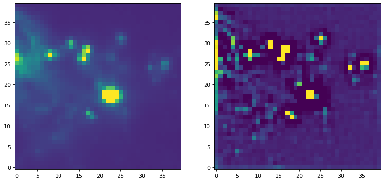
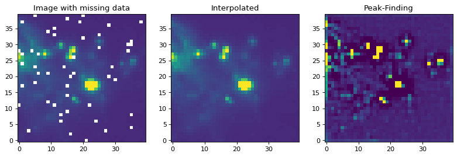

Convolving with Unnormalized Kernels¶
There are some tasks, such as source finding, where you want to apply a filter with a kernel that is not normalized.
For data that are well-behaved (contain no missing or infinite values), this can be done in one step:
convolve(image, kernel)
Examples¶
For an example of applying a filter with a kernel that is not normalized, we can try to run a commonly used peak enhancing kernel:
import numpy as np
import matplotlib.pyplot as plt
from astropy.io import fits
from astropy.utils.data import get_pkg_data_filename
from astropy.convolution import CustomKernel
from scipy.signal import convolve as scipy_convolve
from astropy.convolution import convolve, convolve_fft
# Load the data from data.astropy.org
filename = get_pkg_data_filename('galactic_center/gc_msx_e.fits')
hdu = fits.open(filename)[0]
# Scale the file to have reasonable numbers
# (this is mostly so that colorbars don't have too many digits)
# Also, we crop it so you can see individual pixels
img = hdu.data[50:90, 60:100] * 1e5
kernel = CustomKernel([[-1,-1,-1], [-1, 8, -1], [-1,-1,-1]])
astropy_conv = convolve(img, kernel, normalize_kernel=False, nan_treatment='fill')
#astropy_conv_fft = convolve_fft(img, kernel, normalize_kernel=False, nan_treatment='fill')
plt.figure(1, figsize=(12, 12)).clf()
ax1 = plt.subplot(1, 2, 1)
im = ax1.imshow(img, vmin=-6., vmax=5.e1, origin='lower',
interpolation='nearest', cmap='viridis')
ax2 = plt.subplot(1, 2, 2)
im = ax2.imshow(astropy_conv, vmin=-6., vmax=5.e1, origin='lower',
interpolation='nearest', cmap='viridis')
{kind=link}
{kind=link}

If you have an image with missing values (NaNs), you have to replace them with real values first. Often, the best way to do this is to replace the NaN values with interpolated values. In the example below, we use a Gaussian kernel with a size similar to that of our peak-finding kernel to replace the bad data before applying the peak-finding kernel.
from astropy.convolution import Gaussian2DKernel, interpolate_replace_nans
# Select a random set of pixels that were affected by some sort of artifact
# and replaced with NaNs (e.g., cosmic-ray-affected pixels)
np.random.seed(42)
yinds, xinds = np.indices(img.shape)
img[np.random.choice(yinds.flat, 50), np.random.choice(xinds.flat, 50)] = np.nan
# We smooth with a Gaussian kernel with x_stddev=1 (and y_stddev=1)
# It is a 9x9 array
kernel = Gaussian2DKernel(x_stddev=1)
# interpolate away the NaNs
reconstructed_image = interpolate_replace_nans(img, kernel)
# apply peak-finding
kernel = CustomKernel([[-1,-1,-1], [-1, 8, -1], [-1,-1,-1]])
# Use the peak-finding kernel
# We have to turn off kernel normalization and set nan_treatment to "fill"
# here because `nan_treatment='interpolate'` is incompatible with non-
# normalized kernels
peaked_image = convolve(reconstructed_image, kernel,
normalize_kernel=False,
nan_treatment='fill')
plt.figure(1, figsize=(12, 12)).clf()
ax1 = plt.subplot(1, 3, 1)
ax1.set_title("Image with missing data")
im = ax1.imshow(img, vmin=-6., vmax=5.e1, origin='lower',
interpolation='nearest', cmap='viridis')
ax2 = plt.subplot(1, 3, 2)
ax2.set_title("Interpolated")
im = ax2.imshow(reconstructed_image, vmin=-6., vmax=5.e1, origin='lower',
interpolation='nearest', cmap='viridis')
ax3 = plt.subplot(1, 3, 3)
ax3.set_title("Peak-Finding")
im = ax3.imshow(peaked_image, vmin=-6., vmax=5.e1, origin='lower',
interpolation='nearest', cmap='viridis')
{kind=link}
{kind=link}
